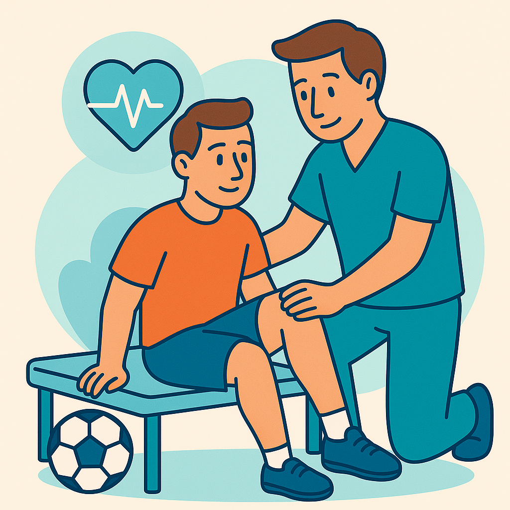

Fisioterapia Deportiva
¿Qué es la Fisioterapia Deportiva?
Es la rama de la fisioterapia dedicada al tratamiento, prevención y recuperación de lesiones derivadas de la práctica deportiva. Ayuda tanto a deportistas profesionales como a personas activas a optimizar su rendimiento y evitar recaídas.
¿Qué técnicas se utilizan?
Utilizamos un enfoque integral con técnicas manuales, ejercicios terapéuticos y educación en prevención.
- Masaje deportivo: Descarga muscular antes o después del ejercicio.
- Vendaje funcional: Estabiliza sin limitar el movimiento.
- Ejercicios de fortalecimiento: Previenen recaídas y mejoran el rendimiento.
Beneficios clave
Ayuda a reducir el tiempo de recuperación, mejora la movilidad y previene futuras lesiones. Es una herramienta clave para deportistas de todos los niveles.
¿Necesitas más información?
Si tienes alguna pregunta o necesitas más detalles sobre nuestros servicios, ¡no dudes en contactarnos!
Contáctanos